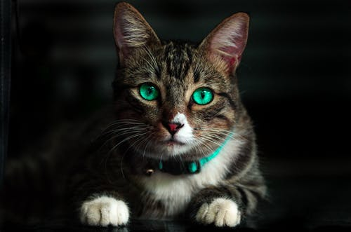

This article is about a species commonly kept as a pet.
The cat (Felis catus) is a domestic species of small carnivorous mammal.It is the only domesticated species in the family Felidae and is commonly referred to as the domestic cat or house cat to distinguish it from the wild members of the family.Cats are commonly kept as house pets but can also be farm cats or feral cats; the feral cat ranges freely and avoids human contact.Domestic cats are valued by humans for companionship and their ability to kill rodents.About 60 cat breeds are recognized by various cat registries
The cat is similar in anatomy to the other felid species: it has a strong flexible body, quick reflexes, sharp teeth, and retractable claws adapted to killing small prey. Its night vision and sense of smell are well developed. Cat communication includes vocalizations like meowing, purring, trilling, hissing, growling, and grunting as well as cat-specific body language. Although the cat is a social species, it is a solitary hunter. As a predator, it is crepuscular, i.e. most active at dawn and dusk. It can hear sounds too faint or too high in frequency for human ears, such as those made by mice and other small mammals.It also secretes and perceives pheromones.
The domestic cat has a smaller skull and shorter bones than the European wildcat.It averages about 46 cm (18 in) in head-to-body length and 23-25 cm (9-10 in) in height, with about 30 cm (12 in) long tails. Males are larger than females.Adult domestic cats typically weigh between 4 and 5 kg
Cats have seven cervical vertebrae (as do most mammals); 13 thoracic vertebrae (humans have 12); seven lumbar vertebrae (humans have five); three sacral vertebrae (as do most mammals, but humans have five); and a variable number of caudal vertebrae in the tail (humans have only three to five vestigial caudal vertebrae, fused into an internal coccyx).The extra lumbar and thoracic vertebrae account for the cat's spinal mobility and flexibility. Attached to the spine are 13 ribs, the shoulder, and the pelvis.
The cat skull is unusual among mammals in having very large eye sockets and a powerful specialized jaw. Within the jaw, cats have teeth adapted for killing prey and tearing meat. When it overpowers its prey, a cat delivers a lethal neck bite with its two long canine teeth, inserting them between two of the prey's vertebrae and severing its spinal cord, causing irreversible paralysis and death.[65] Compared to other felines, domestic cats have narrowly spaced canine teeth relative to the size of their jaw, which is an adaptation to their preferred prey of small rodents, which have small vertebrae.